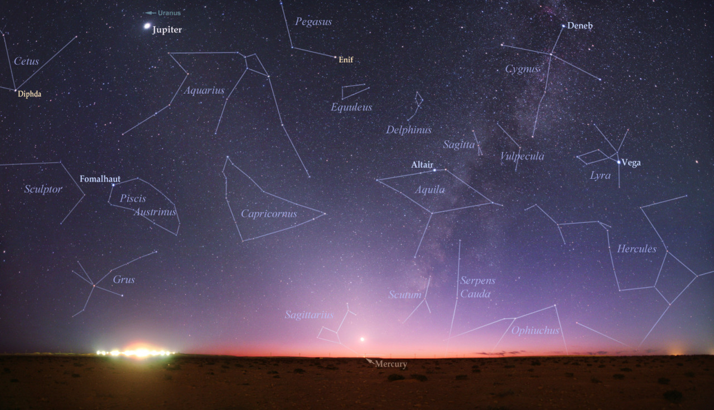

Books
Media Appearances
Contact
Blog
Here I explore the intersection of science and society, the life and tools of an academic, and anything else that strikes my fancy.
Pascal's Wager Again some quick thoughts
I haven't written much on Pascal's Wager, but I had this small thought. Perhaps someday I'll flesh this out a bit more.
Introduction
In the standard Pascal’s Wager, the …
Climate Change Point and Counterpoint
In this post, I am reacting to a very interesting and well researched post where a liberal argues that the climate science is not as settled as we hear. I …
Can you guess my sign? Testing Astrology

A friend of mine who is interested in astrology claims that he can determine my astrological sign from some simple questions, and knowing me for years (although not knowing my …
Even if determinism were true it wouldn't matter
Introduction
There is a great paper Thermal noise and the emergence of the arrow of time: A simple model that illustrates the notion of the role of uncertainty in the …
Free Will On My Mind
Usually when thinking about free will my thoughts run in circles. However the recent talks by Sean Carroll were some of the clearest exposition on the topic. In summary we …
Jaynes vs Gelman Bayes for Messy Data
I copied a comment on my old site, and am replying to it here. It is a fantastically interesting question, which I have been enjoying thinking about.
It refers to …
Probability Does Extend Logic

In the article Probability theory does not extend logic David Chapman, the author, criticizes the claim that probability theory generalizes logic to cases with uncertainty. He is particularly scornful of …
Mapping Worldview to Probability
I've heard many times (see here and here, for examples) the objection from apologists that certain claims (i.e. supernatural events, miracles, etc…) are ruled either impossible or highly unlikely …
Is Science a Self-Sealing Process?
In 1969, NASA faked the moon landing - there was a huge conspiracy to cover up the facts that the landing was actually filmed in Hollywood. Well, that's what the conspiracy …
What Makes an Explanation Bad? When it's easy to vary

In David Deutsch's TED Talk he describes what makes good and bad explanations. In particular he outlines what makes scientific explanations good ones whereas mythological ones bad. Many people claim …
Laplace and Twins Why Bayes is still right
From this paper,
http://statweb.stanford.edu/~ckirby/brad/other/2013Perspective.pdf
we have the following text:
“Controversial theorem” sounds like an oxymoron, but Bayes’ Rule has played this part …
Student Course Evaluations What should a professor do?
I’m always interested in the process of evaluation, especially for professors. It is common to have student evaluations performed at the end of the semester, and there are endless …